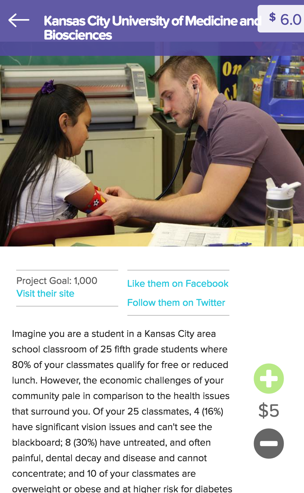

Technologies: Ruby, Ruby on Rails, Node.js, Apache Solr, Java, Android, Socket.io, Redis, MySQL
Description: Zoomin Market is a drive-thru grocery store where customers would shop online, select a pickup time, and drive-thru. They would check in at a kiosk when arriving at the store and an employee would be notified what stall to deliver their groceries to.
My Role: I was a part of this project from its initial conception beginning with product strategy. As the projects only back-end developer I designed and implemented the inventory system, e-commerce website, tablets for warehouse workers, kiosks, etc. Once open, I worked alongside the employees to improve the efficiencies of the system, modified the customer interface as we received feedback, and continuously collaborated with the two owners on ways to increase profits.
Technologies: Ruby on Rails, MySQL, Stripe
Description: Daily Deeds was a website that allowed users to donate a small amount of money each day to a pre-selected group of charities. When a large organization gives money to charity they normally provide a follow up with how they use the money and why it was benefitial however small doners rarely get this courdesy. Our website would send users a follow up when they donated to a charity with exactly that. This would motivate them to donate in the future and create a habit of giving.
My Role: This was a project that was created at startup weekend in Kansas City. I developed the back-end rails server and a friend of mine designed and developed the front-end in about two days. We did not come up with the idea but were drawn to the project after hearing the proposal on the first night and decided we wanted to help.
Technologies: Ruby on Rails, Java, Java EE
Description: Machete is a web and desktop application that allows college and high school debaters to store, share, and present research materials in a revolutioary new way. Without an electronic solution debate teams would travel with about 4 14-gallon tubs filled with paper evidence per team.
My Role: I started this project my last year of college and decided to try and grow it once finished. I became an assistant coach for the Augustana debate team which enabled me to travel with the team while interacting with the users of my software.
Technologies: Ruby on Rails, MySQL
Description: ReviewMyContract is a website where users can upload a contract they need to have reviewed such as a new lease or a will and get it reviewed by a laywer for a flat rate.
My Role: A laywer approached us at Brockton Creative Group with this idea and we took on the task of developing them a website on Rails.
Technologies: Wordpress, MySQL
This client approached us at Brockton Creative Group looking for a solution similar to eventbrite for registering for their conference they have once a year. They needed a new website as well so we created a website built with wordpress and wrote our own plugins to manage the resitration and payment process. In the first year alone we saved them money developing a custom plugin instead of paying eventbrite fees in addition to adding functionality that was not available on other platforms.
My Role: I wrote the plugin that manages conference registration, help setup the taxonomies for the wrodpress site, and worked with the front end developer to ensure everything worked as specified by the client.

Technologies: PHP, Wordpress, MySQL, Google Maps API
This website had more content to manage than any other website I have built. With 220 parks and 116 monuments and sculptures we were tasked with orgnizing a website that would showcase everything Kansas City Parks have to offer. I created an interactive maps using the Google Maps API, a custom calandar plugin, and helped organize the taxonomies to make it easy for KC parks to manage their content.
Technologies: Ruby, Ruby on Rails, MySQL, Google Maps API
We created a website with an interactive menu and a franchise management section where employees and managers could login to take tests, download franchise documents, send notification and more.